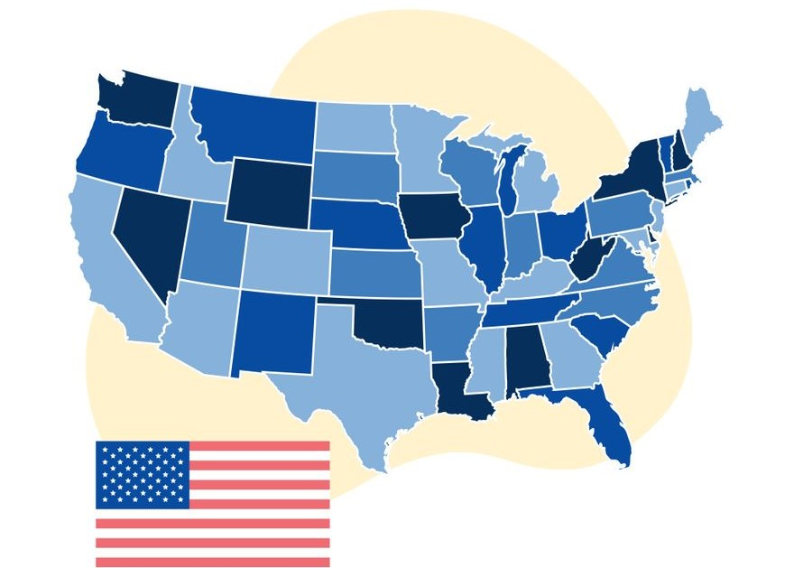

2026 is a midterm year — turnout is typically much lower.
Created by Steven Maheshwary
Vote Power is the number of eligible citizens in your county for every person who actually voted: Vote Power = eligible citizens ÷ votes cast = 100 ÷ turnout %. A Vote Power of 2.0 means only half of eligible citizens voted, so each ballot cast spoke for two people.
Reproducible build: scripts/ on GitHub (build_2022.py, then build_data.py).
county_votes_2022_fill.csv.
Share your voting power:
Facebook Instagram X (Twitter) Threads LinkedIn